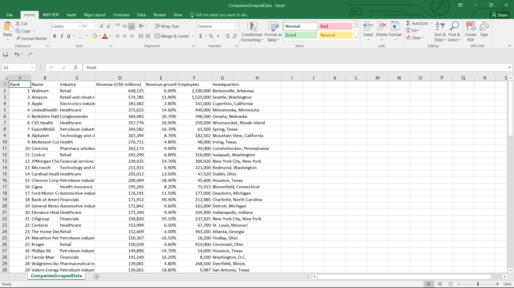
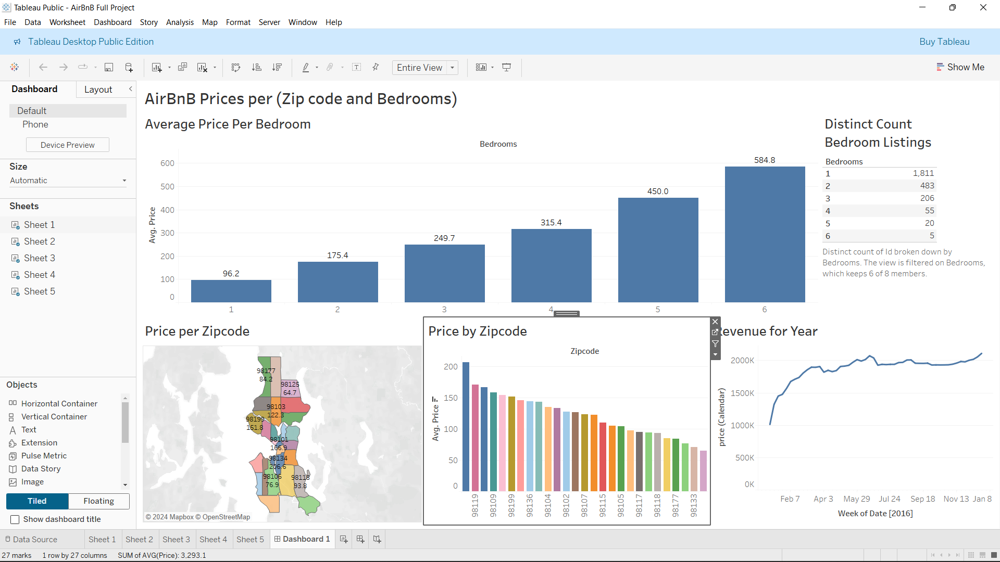
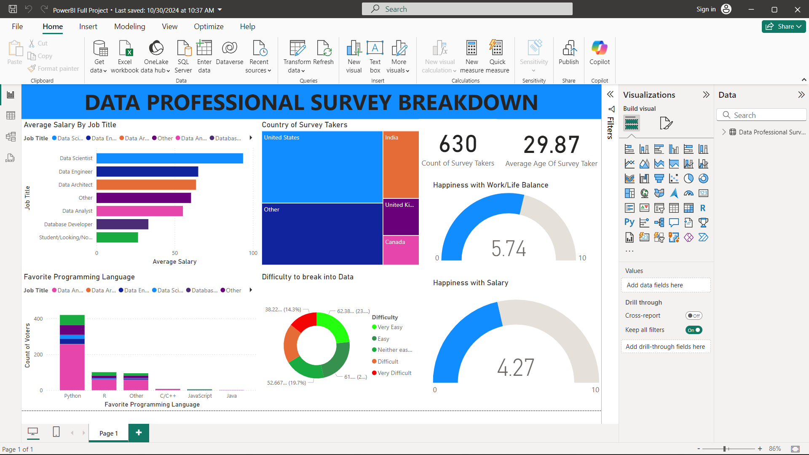
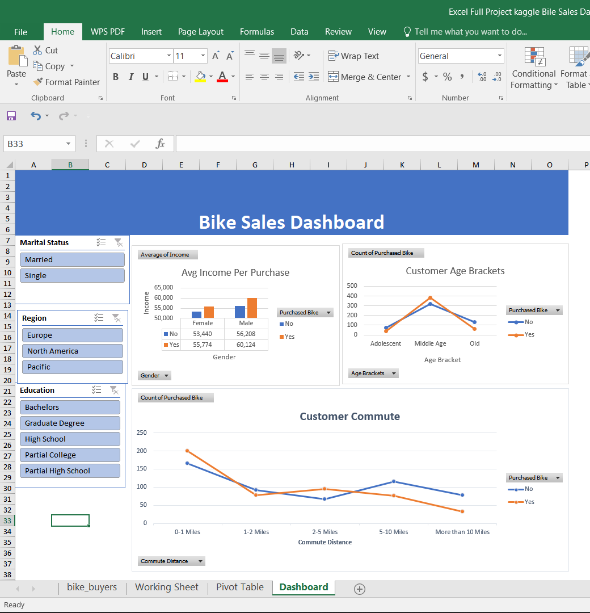

This project involves scraping data from Wikipedia to compile a
list of the top 100 companies in the world. Using Python, I
extracted relevant information from the Wikipedia page and saved
it as a CSV file for easy access and analysis.This project serves
as a practical example of web scraping techniques and data
handling in Python, providing a foundational understanding of how
to gather and organize data from online sources.
A screenshot
of the dataset is shown below:

This project focuses on data cleaning for a
global layoffs dataset using MySQL. The primary goal was to
prepare the data for analysis by implementing several key data
cleaning procedures.
I removed duplicates, standardized the data, handled null or
blank values and removed unwanted columns. This project demonstrates the importance of data cleaning in
the data science workflow, showcasing how to effectively utilize
MySQL for managing and refining datasets to facilitate meaningful
analysis.
I conducted an Exploratory Data Analysis (EDA) to
gain insights into the global layoffs dataset. During the
analysis, I examined various aspects, including identifying which
countries had the highest number of layoffs from
2020 to 2023. Notably, the results revealed that
the United States topped the list with a
staggering 256,559 layoffs, followed by
India with 35,993 layoffs, and
Poland at the bottom with only
25 layoffs.
The breakdown of layoffs by
year is as follows:
- 2023: 125 677
- 2022: 160 661
- 2021: 15 823
- 2020: 80 998

This project showcases a Tableau dashboard developed for analyzing
Airbnb data, emphasizing the power of data visualization in
understanding market dynamics and facilitating informed
decision-making in the rental space. For example, the line graph
in the bottom right corner provides a clear view of seasonal
trends, indicating that revenue is at its lowest from early to the
end of January, followed by a sharp increase from early February
to April, after which it stabilizes and peaks in December. Based
on the insights from my project, I can advise a potential Airbnb
investor to make data-driven decisions, such as
delaying their property listing until early February to capitalize
on the anticipated sharp increase in revenue, thereby maximizing
their earnings during the peak months.
Alternatively, I would recommend considering
promotions or discounts during the low season to attract guests
and maintain occupancy.

This project features a
Power BI dashboard created for analyzing data
from a professional survey. The dashboard includes various
visualizations, such as a chart that displays the relationship
between job titles and salaries, providing
insights into compensation trends across different roles. Another
visualization illustrates the count of voters (on the x-axis)
against their preferred programming languages by prefoession (on
the y-axis), clearly highlighting the most favored languages among
professionals. Additionally, there are gauges,
one for instance visually represents how satisfied voters are with
their salaries, allowing users to click on specific job titles you
can click on Data Analysts to view satisfaction scores on a scale
from 1 to 10. This interactive dashboard enables users to explore
the data and gain valuable insights into job market dynamics and
professional satisfaction.

This project employs Microsoft Excel to analyze a
bike sales dataset from Kaggle. The workflow includes
Data Cleaning, Analysis and Visualization. The
final dashboard features three key visualizations which are
Average Income per Purchase,Customer Age Brackets, Customer
Commute Distance. Additionally, three interactive filters were created for the
dashboard which are Marital Status filter with
options Single or Married, Region filter
with options Europe, North America, Pacific and
Education filter with options
Bachelors, Graduate Degree, High School, Partial High School
Pacific. Users can filter the data by selecting options, such as viewing
single individuals living in Europe with a Bachelors degree, to
gain deeper insights into customer demographics and purchasing
behaviors.